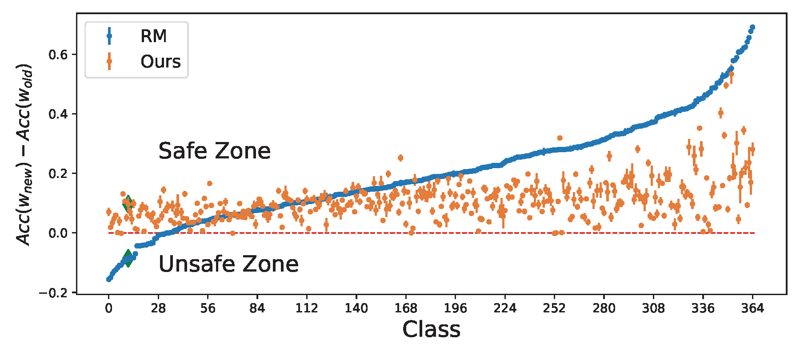
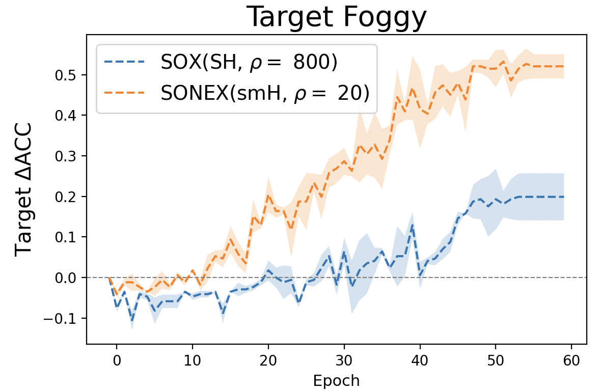
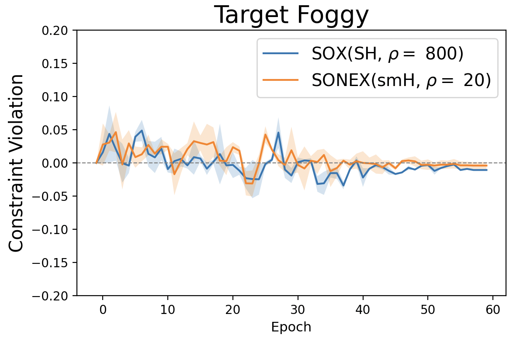

Section 6.7 Constrained Learning
Constrained learning is a machine learning framework in which the model is trained not only to minimize a specified risk but also to satisfy additional constraints. These constraints can encode domain knowledge, prior information, regularization terms, or other application-specific requirements. Unlike simple domain constraints \(\mathbf{w}\in\mathcal{W}\), we consider complicated functional constraints in the form:
\[\begin{equation}\label{nonlinearconstrained} \begin{aligned} \min_{\mathbf{w}\in\mathbb{R}^d} &\quad F(\mathbf{w}) \\ s.t. &\quad g_i(\mathbf{w})\leq 0,\; i=1, \ldots, m. \end{aligned} \end{equation}\]
In many cases, \(g_i(\mathbf{w})\) also depends on the data, making its evaluation and gradient computation expensive.
Traditional works for constrained optimization include three primary categories: (1) primal methods, e.g., switching subgradient methods and level-set methods; (2) primal-dual methods that reformulate constrained optimization problems as saddle point problems; (3) penalty-based approaches that incorporate constraints by adding a penalty term to the objective function. In this section, we demonstrate how FCCO enables penalty-based approaches to be both efficient and practically effective.
6.7.1 A General Penalty-based Approach via FCCO
To tackle the constraints, a penalty-based approach uses a penalty function \(f(\cdot)\) to convert the constrained problem into an unconstrained one:
\[\begin{align}\label{eqn:pen} \min_{\mathbf{w}} F(\mathbf{w}) + \frac{\rho}{m}\sum_{i=1}^m f(g_i(\mathbf{w})), \end{align}\]
where \(\rho > 0\) is called the penalty parameter. Commonly used penalty functions include:
Squared hinge penalty: \(f(g) = \frac{1}{2}[g]_+^2\)
Hinge penalty: \(f(g) = [g]_+\)
Smoothed hinge penalty: \[f(g) = \begin{cases} g - \frac{\epsilon}{2} & \text{if } g \geq \epsilon, \\ \frac{g^2}{2\epsilon} & \text{if } 0 < g < \epsilon, \\ 0 & \text{otherwise}, \end{cases}\] where \(\epsilon \ll 1\) is a small constant.
Different penalty functions yield different convergence rates. However, they share a common property: when the constraints are satisfied at a point \(\mathbf{w}\), no penalty is incurred; otherwise, the greater the violation, the larger the penalty.
We can see that the added second term in (\(\ref{eqn:pen}\)) is a form of FCCO. Hence, the algorithms developed in Chapter 5 can be applied to solving the resulting unconstrained problem. Nevertheless, we need to answer several important questions: (1) What is an appropriate value for \(\rho\)? (2) What convergence guarantees can be established for the original constrained problem?
By using the conjugate of \(f\), the unconstrained problem is equivalent to:
\[\begin{align}\label{eqn:pen-pd} \min_{\mathbf{w}}\max_{\mathbf{y}\in\text{dom}^m(f^*)} F(\mathbf{w}) + \rho \frac{1}{m}\sum_{i=1}^m \left(y_i g_i(\mathbf{w}) - f^*(y_i)\right). \end{align}\]
For the three penalty functions, we have:
- squared hinge penalty: \(f^*(y) = \frac{1}{2}y^2\), \(\text{dom}(f^*)=\{y: y\geq 0\}\);
- hinge penalty: \(f^*(y) = \mathbb{I}_{0,\infty}[y\in \text{dom}(f^*)]\), \(\text{dom}(f^*)=\{y: y\in[0,1]\}\);
- smoothed hinge penalty: \(f^*(y) = \frac{\epsilon}{2}y^2\), \(\text{dom}(f^*)=\{y: y\in[0,1]\}\).
KKT solutions
Let us focus on non-convex optimization problems with a non-convex objective \(F(\mathbf{w})\) and non-convex constraints \(g_k(\mathbf{w}),\forall k\). For a non-convex optimization problem, finding a globally optimal solution is intractable. Instead, a Karush-Kuhn-Tucker (KKT) solution is of interest, which is an extension of a stationary solution of an unconstrained non-convex optimization problem.
Definition 6.1 (KKT solution).
A solution \(\mathbf{w}\) is a KKT solution to (\(\ref{nonlinearconstrained}\)) if there exists \(\boldsymbol{\lambda}=(\lambda_1,\dots,\lambda_m)^\top\in\mathbb{R}_+^m\) such that (i) \(0 \in \partial F(\mathbf{w}) + \sum_{k=1}^m \lambda_k\partial g(\mathbf{w})\), (ii) \(g_k(\mathbf{w})\leq 0, \forall k\) and (iii) \(\lambda_kg_k(\mathbf{w})=0\), \(\forall k\).
For non-asymptotic analysis, we consider finding an \(\epsilon\)-KKT solution as defined below.
Definition 6.2 (\(\epsilon\)-KKT solution).
A solution \(\mathbf{w}\) is an \(\epsilon\)-KKT solution to (\(\ref{nonlinearconstrained}\)) if there exists \(\boldsymbol{\lambda}=(\lambda_1,\dots,\lambda_m)^\top\in\mathbb{R}_+^m\) such that (i): \(\text{dist}(0, \partial F(\mathbf{w})+ \sum_{k=1}^m \lambda_k\partial g_k(\mathbf{w}))\leq \epsilon\), (ii): \([g_k(\mathbf{w})]_+\leq \epsilon, \forall k\), and (iii): \(|\lambda_kg_k(\mathbf{w})|\leq \epsilon,\forall k\).
If the objective and the constraint functions are non-smooth, finding an \(\epsilon\)-KKT solution is not tractable, even when the constraint functions are absent. For example, if \(F(x) = |x|\) finding an \(\epsilon\)-stationary solution is infeasible unless we find the optimal solution \(x=0\). To address this challenge, we consider finding a nearly \(\epsilon\)-KKT solution defined below.
Definition 6.3 (nearly \(\epsilon\)-KKT solution).
A solution \(\mathbf{w}\) is a nearly \(\epsilon\)-KKT solution to (\(\ref{nonlinearconstrained}\)) if there exist \(\bar{\mathbf{w}}\) and \(\boldsymbol{\lambda}=(\lambda_1,\dots,\lambda_m)^\top\in\mathbb{R}_+^m\) such that (i): \(\|\mathbf{w} - \bar{\mathbf{w}}\|_2\leq O(\epsilon)\), \(\text{dist}(0, \partial F(\bar{\mathbf{w}})+ \sum_{k=1}^m \lambda_k\partial g_k(\bar{\mathbf{w}}))\leq \epsilon\), (ii): \([g_k(\bar{\mathbf{w}})]_+\leq \epsilon, \forall k\), and (iii): \(|\lambda_kg_k(\bar{\mathbf{w}})| \leq \epsilon,\forall k\).
Theory
Solving the unconstrained problem (\(\ref{eqn:pen}\)) can yield a (nearly) stationary solution. But is this solution close to satisfying the KKT conditions of the original constrained problem? We answer this question for the three penalty functions below. Let \(\boldsymbol{g}(\mathbf{w}) = (g_1(\mathbf{w}), \ldots, g_m(\mathbf{w}))^{\top} \in \mathbb{R}^{m}\) denote the vector of constraint functions, and let \(\nabla \boldsymbol{g}(\mathbf{w}) \in \mathbb{R}^{m \times d}\) denote its Jacobian matrix.
Squared Hinge Penalty
Let us assume \(F\) and \(g_k\) are differentiable. We make the following assumption regarding the regularity of the constraint functions.
Assumption 6.1
There exists a constant \(\delta > 0\) such that \(\sigma_{\min}(\nabla \boldsymbol{g}(\mathbf{w})) \geq \delta\) for any \(\mathbf{w}\) satisfying \(\max_{k=1,\dots,K} g_k(\mathbf{w}) > 0\), where \(\sigma_{\min}(\cdot)\) denotes the minimum singular value of a matrix.
This assumption implies that when any constraint is violated, its gradient direction can be used to effectively reduce the constraint value. To illustrate this, consider a single constraint defined by a \(L_g\)-smooth function \(g(\cdot)\). Suppose \(\mathbf{w}\) is a point where the constraint is violated, i.e., \(g(\mathbf{w}) > 0\). Taking a gradient descent step \(\mathbf{w}' = \mathbf{w} - \eta \nabla g(\mathbf{w})\) yields:
\[\begin{align*} g(\mathbf{w}') &\leq g(\mathbf{w}) + \nabla g(\mathbf{w})^{\top}(\mathbf{w}' - \mathbf{w}) + \frac{L_g}{2} \| \mathbf{w}' - \mathbf{w} \|_2^2 \\ &= g(\mathbf{w}) - \left( \eta - \frac{L_g \eta^2}{2} \right) \| \nabla g(\mathbf{w}) \|_2^2. \end{align*}\]
If Assumption 6.1 holds, then \(\| \nabla g(\mathbf{w}) \|_2 \geq \delta\), which implies:
\[g(\mathbf{w}') \leq g(\mathbf{w}) - \left( \eta - \frac{L_g \eta^2}{2} \right) \delta^2,\]
ensuring a sufficient decrease in the constraint function value.
In addition, we need to assume the objective function is Lipschitz continuous.
Assumption 6.2
There exists a constant \(C>0\) such that \(\|\nabla F(\mathbf{w})\|_2\leq C, \forall \mathbf{w}\).
Under these assumptions, we establish the following theorem.
Theorem 6.1
Suppose Assumption 6.1 and Assumption 6.2 hold. Let \(\mathbf{w}\) be an \(\epsilon\)-stationary solution to the unconstrained penalized problem (\(\ref{eqn:pen}\)) with a squared hinge penalty such that
\[\mathbb{E}\left[\left\|\nabla F(\mathbf{w})+\frac{\rho}{m}\nabla \boldsymbol{g}(\mathbf{w})^{\top} [\boldsymbol{g}(\mathbf{w})]_+\right\|^2_2\right] \leq \epsilon^2.\]
If \(\rho\geq\max(\frac{2m(C^2 + 1)}{\epsilon\delta^2}, \frac{m\sqrt{2(C^2 + 1)}}{\epsilon\delta})\), then \(\mathbf{w}\) is also an \(\epsilon\)-KKT solution to the original problem (\(\ref{nonlinearconstrained}\)).
Proof. Let \(\lambda_k = \frac{\rho}{m}[g_k(\mathbf{w})]_+, \forall k\). If \(\max_k g_k(\mathbf{w})\leq 0\), then \(\lambda_k = 0\). As a result, \(\mathbf{w}\) is an \(\epsilon\)-KKT solution to the original problem.
Below, let us focus on the case \(\max_k g_k(\mathbf{w})> 0\), i.e., there exists one constraint that is violated at \(\mathbf{w}\). Then, under Assumption 6.1, we have
\[\begin{align*} \|[\boldsymbol{g}(\mathbf{w})]_+\|_2^2\leq& \frac{1}{\delta^2}\| \nabla \boldsymbol{g}(\mathbf{w})^{\top} [\boldsymbol{g}(\mathbf{w})]_+ \|_2^2\\ = & \frac{m^2}{\rho^2\delta^2}\left\|\nabla F(\mathbf{w}) + \frac{\rho}{m} \nabla \boldsymbol{g}(\mathbf{w})^{\top} [\boldsymbol{g}(\mathbf{w})]_+ -\nabla F(\mathbf{w})\right\|_2^2\\ \leq & \frac{2m^2}{\rho^2\delta^2}\left[ \left\|\nabla F(\mathbf{w})\right\|_2^2 + \left\|\nabla F(\mathbf{w}) + \frac{\rho}{m} \nabla \boldsymbol{g}(\mathbf{w}) [\boldsymbol{g}(\mathbf{w})]_+ \right\|_2^2 \right]\\ \leq & \frac{2m^2}{\rho^2\delta^2}\left[C^2 + \epsilon^2\right]\leq \epsilon^2, \end{align*}\]
where the last inequality follows from \(\rho\geq\frac{m\sqrt{2(C^2 + \epsilon^2)}}{\delta\epsilon}\). Hence \([g_k(\mathbf{w})]_+\leq \epsilon, \forall k\).
Then, let us bound \(|\lambda_k g_k(\mathbf{w})|\). If \(g_k(\mathbf{w})<0\), then \(\lambda_k=0\), we have \(|\lambda_kg_k(\mathbf{w})|=0\). If \(g_k(\mathbf{w})\geq0\), then
\[\begin{align*} \mathbb{E}|{\lambda_k}g_k(\mathbf{w})| &= \mathbb{E}|\frac{\rho}{m}g_k(\mathbf{w})g_k(\mathbf{w})| \leq \frac{\rho}{m} \mathbb{E} \|[\boldsymbol{g}(\mathbf{w})]_+\|_2^2\\ & \leq \frac{\rho}{m} \cdot\frac{2m^2}{\rho^2\delta^2}\left[ \left\|\nabla F(\mathbf{w})\right\|_2^2 + \left\|\nabla F(\mathbf{w}) + \frac{\rho}{m} \nabla \boldsymbol{g}(\mathbf{w}) [\boldsymbol{g}(\mathbf{w})]_+ \right\|_2^2 \right]\\ & \leq \frac{2m}{\rho\delta^2}\left[ C^2 + \epsilon^2 \right]\leq \epsilon, \end{align*}\]
where the last inequality uses \(\rho\geq\frac{2m(C^2 + \epsilon^2)}{\epsilon\delta^2}\).
■
Hinge Penalty
Since the hinge function is non-smooth, let us consider non-smooth \(F\) and \(g_k\). We make the following assumption regarding the regularity of the constraint functions.
Assumption 6.3
There exists a constant \(\delta>0\) such that
\[\begin{align}\label{eqn:cq} \text{dist}\left(0, \frac{1}{m}\sum_{k=1}^{m}\partial [g_k(\mathbf{w})]_+\right)\ge \frac{\delta}{m}, \forall\mathbf{w}\in\mathcal{V} \end{align}\]
where \(\mathcal{V}=\{\mathbf{w}: \max_k g_k(\mathbf{w})> 0\}\) and \(\partial [g_k(\mathbf{w})]\) denotes the subgradient in terms of \(\mathbf{w}\).
The above assumption is implied by Assumption 6.1 when \(g\) is differentiable and hence is weaker. To see this, we have
\[\text{dist}\left(0, \frac{1}{m}\sum_{k=1}^{m}\nabla [g_k(\mathbf{w})]_+\right) =\left \| \frac{1}{m}\sum_{k=1}^{m}\nabla [g_k(\mathbf{w})]_+\right\|_2 = \|\nabla g(\mathbf{w})^{\top}\mathbf{a}\|_2\geq \delta \|\mathbf{a}\|_2\geq \frac{\delta}{m},\]
where \(\mathbf{a} = \frac{1}{m}(\xi_1,\ldots, \xi_m)\), and \(\xi_k\in ([g_k(\mathbf{w})]_+)'\in[0,1]\).
Theorem 6.2
Suppose Assumption 6.3 and Assumption 6.2 hold. Let \(\mathbf{w}\) be a nearly \(\epsilon\)-stationary solution to the unconstrained penalized problem (\(\ref{eqn:pen}\)) with a hinge penalty such that there exists \(\bar{\mathbf{w}}\) satisfying \(\|\mathbf{w} - \bar{\mathbf{w}}\|_2\leq O(\epsilon)\), and
\[\text{dist}\left(0, \partial F(\bar{\mathbf{w}})+\frac{\rho}{m}\sum_{k=1}^{m}\partial [g_k(\bar{\mathbf{w}})]_+\right) \leq \epsilon.\]
If \(\rho>\frac{m(C + 1)}{\delta}\), then \(\mathbf{w}\) is a nearly \(\epsilon\)-KKT solution to the original problem (\(\ref{nonlinearconstrained}\)).
Proof. By the definition of \(\mathbf{w}\), there exists \(\bar{\mathbf{w}}\) such that \(\|\mathbf{w} - \bar{\mathbf{w}}\|_2\leq O(\epsilon)\), and
\[\text{dist}\left(0, \partial F(\bar{\mathbf{w}})+\frac{\rho}{m}\sum_{k=1}^{m}\partial [g_k(\bar{\mathbf{w}})]_+\right) \leq \epsilon.\]
Since \(\partial[g_k(\bar{\mathbf{w}})]_+= \xi_k \partial g_k(\bar{\mathbf{w}})\), where
\[\xi_k = \begin{cases} 1 & \text{if } g_k(\bar{\mathbf{w}}) > 0, \\ [0,1] & \text{if } g_k(\bar{\mathbf{w}}) = 0, \\ 0 & \text{if } g_k(\bar{\mathbf{w}}) < 0, \end{cases} \quad \in [g_k(\bar{\mathbf{w}})]'_+,\]
there exists \(\lambda_k \in \frac{\rho\xi_k}{m}\geq 0, \forall k\) such that
\[\text{dist}\left(0, \partial F(\bar{\mathbf{w}})+\sum_{k=1}^{m}\lambda_k \partial g_k(\bar{\mathbf{w}})\right) \leq \epsilon.\]
Thus, we prove condition (i) in the definition of nearly \(\epsilon\)-KKT solution. Next, let us prove condition (ii). We argue that \(\max_k g_k(\bar{\mathbf{w}})\leq 0\). Suppose this does not hold, i.e., \(\max_k g_k(\bar{\mathbf{w}})> 0\), we will derive a contradiction. Since \(\exists\mathbf{v}\in\partial F(\bar{\mathbf{w}})\) we have
\[\begin{align*} \epsilon&\geq \text{dist}\left(0, \mathbf{v}+\frac{\rho}{m}\sum_{k=1}^{m}\partial [g_k(\bar{\mathbf{w}})]_+\right)\\ &\ge \text{dist}\left(0, \frac{\rho}{m}\sum_{k=1}^{m}\partial [g_k(\bar{\mathbf{w}})]_+\right)- \|\mathbf{v}\|_2 \ge \frac{\rho \delta}{m} -C, \end{align*}\]
which is a contradiction to the assumption that \(\rho >\frac{m(\epsilon + C)}{\delta}\). Thus, \(\max_k g_k(\bar{\mathbf{x}})\leq 0\). This proves condition (ii). The last condition (iii) holds because: \(\lambda_k = \frac{\rho\xi_k}{m}\), which is zero if \(g_k(\bar{\mathbf{w}})<0\). Hence, \(\lambda_k g_k(\bar{\mathbf{w}}) =0\).
■
Smoothed Hinge Penalty
We make the following assumption regarding the regularity of the constraint functions.
Assumption 6.4
There exists a constant \(\delta>0\) such that
\[\text{dist}\left(0, \partial g(\mathbf{w})^{\top}\mathbf{v}\right)\ge \delta \|\mathbf{v}\|_2, \forall\mathbf{w}\in\mathcal{V}, \forall \mathbf{v}\in\mathbb{R}^m\]
where \(\mathcal{V}=\{\mathbf{w}: \max_k g_k(\mathbf{w})> 0\}\).
Theorem 6.3
Suppose Assumption 6.1 and Assumption 6.2 hold. Let \(\mathbf{w}\) be a nearly \(\epsilon\)-stationary solution to the unconstrained penalized problem (\(\ref{eqn:pen}\)) with a smoothed hinge penalty such that there exists \(\bar{\mathbf{w}}\) satisfying \(\|\mathbf{w} - \bar{\mathbf{w}}\|_2\leq O(\epsilon)\), and
\[\text{dist}\left(0, \partial F(\bar{\mathbf{w}})+\frac{\rho}{m}\sum_{k=1}^{m}\partial f(g_k(\bar{\mathbf{w}}))\right) \leq \epsilon.\]
If \(\rho>\frac{m(C + 1)}{\delta}\), then there exists \(\boldsymbol{\lambda}\in\mathbb{R}^m_+\) such that (i) \(\|\mathbf{w} - \bar{\mathbf{w}}\|\leq O(\epsilon)\), \(\text{dist}(0, \partial F(\bar{\mathbf{w}})+ \sum_{k=1}^m \lambda_k\partial g_k(\bar{\mathbf{w}}))\leq \epsilon\), (ii) \([g_k(\bar{\mathbf{w}})]_+\leq \epsilon, \forall k\), and (iii) \(\lambda_k[g_k(\bar{\mathbf{w}})]_+ \leq \rho\epsilon/m,\forall k\).
Proof. By the definition of \(f(\cdot)\), we have \(\nabla f(\cdot)=\frac{1}{\epsilon}\min\{[\cdot]_+,\epsilon\}\). According to the definition of \(\mathbf{w}\), there exists \(\bar{\mathbf{w}}\) such that \(\|\mathbf{w} - \bar{\mathbf{w}}\|_2\leq O(\epsilon)\) and
\[\text{dist}\left(0, \partial F(\bar{\mathbf{w}})+\frac{\rho}{m}\sum_{k=1}^{m}\nabla f[g_k(\bar{\mathbf{w}})]\partial g_k(\bar{\mathbf{w}})\right) \leq \epsilon.\]
Let \(\lambda_k=\frac{\rho}{m}\nabla f(g_i(\bar{\mathbf{w}}))=\frac{\rho}{\epsilon m}\min\{[g_k(\bar{\mathbf{w}})]_+,\epsilon\}\). Then,
\[\text{dist}\left(0, \partial F(\bar{\mathbf{w}})+\sum_{k=1}^{m}\lambda_k \partial g_k(\bar{\mathbf{w}})\right) \leq \epsilon.\]
Suppose \(\max_{i=1,\dots,m} g_i(\bar{\mathbf{w}})>\epsilon\). Then there exists \(k'\) such that \([g_k(\bar{\mathbf{w}})]_+>\epsilon\). Hence \(\lambda_{k'}=\frac{\rho}{\epsilon m}\min\{[g_{k'}(\bar{\mathbf{w}})]_+,\epsilon\} = \frac{\rho}{m}\). Hence \(\|\boldsymbol{\lambda}\|_2\geq \frac{\rho}{m}\). As a result, there exists \(\mathbf{v}\in\partial F(\bar{\mathbf{w}})\) such that
\[\begin{align*} \epsilon&\geq \text{dist}\left(0, \mathbf{v}+ \sum_{k=1}^{m}\lambda_k\partial g_k(\bar{\mathbf{w}})\right)\\ &\ge \text{dist}\left(0, \sum_{k=1}^{m}\lambda_k\partial g_k(\bar{\mathbf{w}})\right)- \|\mathbf{v}\|_2 \ge \frac{\rho \delta}{m} -C, \end{align*}\]
which contradicts \(\rho> \frac{m(C+\epsilon)}{\delta}\). Therefore, we must have \(\max_{k=1,\dots,m} g_k(\bar{\mathbf{w}})\leq\epsilon\). Finally, if \(g_k(\bar{\mathbf{w}})<0\), we have \(\lambda_k=0\), then it holds trivially. If \(0\leq g_k(\bar{\mathbf{w}}) \leq \epsilon\), we have
\[|\lambda_k g_k(\bar{\mathbf{w}})| \leq\frac{\rho}{m}[g_k(\bar{\mathbf{w}})]_+\leq\frac{\rho\epsilon}{m}.\]
■
💡 Critical
One important difference among the three penalty functions lies in the required order of the penalty parameter \(\rho\). For the squared hinge penalty, it is necessary to set \(\rho = O(1/\epsilon)\), whereas for the hinge and smoothed hinge penalties, it suffices to take \(\rho = O(1)\). This leads to different complexities of algorithms based on these penalty functions.
Optimization Algorithms
The SOX algorithm and the MSVR algorithm can be used to optimize the squared hinge penalty function and smoothed hinge penalty function with smooth objective function and constraints. SONX and SONEX can be used to optimize the hinge penalty based objective, where the latter is equivalent to a variant for optimizing the smoothed hinge penalty using the MSVR estimator for the inner functions and the MA gradient estimator. ALEXR-DL (the double-loop ALEXR, see Section 5.4.5 can be used to optimize the problem with a weakly convex objective and weakly convex constraint functions. The computational complexities of these algorithms for obtaining a (nearly) \(\epsilon\)-KKT solution are summarized in Table 6.1. The complexity results for SONX and SONEX follow directly from their original theorems. The complexities of SOX and MSVR are obtained by substituting \(L_F = O(\rho)\), \(L_1 = O(\rho)\), \(G_1 = O(\rho)\), and \(\rho = O(1/\epsilon)\) into Theorem 5.1 and Theorem 5.2, respectively. The complexity of ALEXR-DL follows the argument in Section 5.4.5.
Finally, we note that the value of the parameter \(\delta\) in Assumption 6.1, Assumption 6.3, and Assumption 6.4 has a significant impact on the complexity. In particular, smaller values of \(\delta\) lead to higher complexities.
| Algorithm | Penalty | \(F\) | \(g_i\) | Complexity | Loop |
|---|---|---|---|---|---|
| SOX | sqH/smH | SM | SM | \(O(\epsilon^{-7})\) | Single |
| MSVR | sqH/smH | MSS | MSS | \(O(\epsilon^{-5})\) | Single |
| SONX | H | WC | WC | \(O(\epsilon^{-6})\) | Single |
| SONEX | H | SM | SM | \(O(\epsilon^{-5})\) | Single |
| ALEXR-DL | smH | WC | WC | \(O(\epsilon^{-5})\) | Double |
Table 6.1: Summary of different algorithms for penalty-based constrained optimization. “WC” means weakly convex, “SM” means smooth, MSS means “mean squared smoothness”. ‘H’ denotes the hinge penalty, ‘smH’ denotes the smoothed hinge penalty and ‘sqH’ denotes the squared hinge penalty.
6.7.2 Continual Learning with Zero-forgetting Constraints
Continual learning usually refers to learning a sequence of tasks one by one and accumulating knowledge like humans instead of substituting knowledge. The core issue in continual learning is known as catastrophic forgetting, i.e., the learning of the later tasks may significantly degrade the performance of the model for the earlier tasks. Different approaches have been investigated to mitigate catastrophic forgetting, including regularization based approaches, memory based approaches, network expansion based approaches, and constrained optimization based approaches.
Regularization based approaches
These methods aim to preserve previously learned knowledge by penalizing changes to important model parameters. These approaches usually solve the following objective:
\[\min_{\mathbf{w}} \mathcal{L}_{\text{new}}(\mathbf{w}, \mathcal{S}_{\text{new}}) + \lambda R(\mathbf{w}, \mathbf{w}_{\text{old}}),\]
where \(\mathcal{L}_{\text{new}}\) denotes the loss on the new task with a dataset \(\mathcal{S}_{\text{new}}\), and \(R(\mathbf{w}, \mathbf{w}_{\text{old}})\) is the regularization of the new model with respect to the old model. It could regularize directly in the weight parameters or regularize through functions of the weight parameters (e.g., intermediate layers of the neural networks).
Memory based approaches
These techniques store a subset of past data or representations and replay them during training on new tasks. This allows the model to rehearse old knowledge, effectively mimicking how humans review what they’ve previously learned. Strategies include storing raw data, or using generative models to simulate past experiences. These replay data will be used in training as simple as a regularization approach:
\[\begin{align}\label{eqn:rr} \min_{\mathbf{w}} \mathcal{L}_{\text{new}}(\mathbf{w}, \mathcal{S}_{\text{new}}) + \lambda \mathcal{L}_{\text{old}}(\mathbf{w}, \mathcal{S}_{\text{old}}), \end{align}\]
where \(\mathcal{L}_\text{old}(\mathbf{w}, \mathcal{S}_{\text{old}})\) denotes the loss of the model on old tasks using their data \(\mathcal{S}_{\text{old}}\).
Network Expansion based approaches
Network expansion based methods address forgetting by dynamically growing the model’s architecture as new tasks are introduced. This can involve adding new neurons, layers, or modules for each task while keeping older components fixed or partially shared. By allocating new capacity, the model can learn new tasks without overwriting old knowledge.
A Constrained Optimization Approach
A key limitation of the replay and regularization approach in (\(\ref{eqn:rr}\)) is that it does not necessarily preserve the model’s performance on all previous tasks, even with a large regularization weight. Moreover, overly large weights can suppress learning on the new task. This arises because not all prior tasks are equally challenging—some may be inherently easier than others.
A straightforward remedy is to formulate a constrained optimization problem:
\[\begin{equation*} \begin{aligned} \min_{\mathbf{w}} \quad & \mathcal{L}_{\text{new}}(\mathbf{w}, \mathcal{S}_{\text{new}}) \\ \text{s.t.} \quad & \mathcal{L}_k(\mathbf{w}, \mathcal{S}_k) - \mathcal{L}_k(\mathbf{w}_{\text{old}}, \mathcal{S}_k) \leq 0, \quad \forall k = 1, \ldots, m, \end{aligned} \end{equation*}\]
where \(\mathcal{S}_k\) denotes the dataset for the \(k\)-th previous task and \(\mathcal{L}_k\) is its corresponding loss function. These constraints ensure that the new model does not degrade performance on any individual old task as measured on replayed data, which are referred to as the zero-forgetting constraints.
Although this constrained optimization problem was traditionally considered difficult due to the number of constraints and data dependencies, the algorithms introduced in the previous subsection make it tractable. Notably, this constrained formulation serves as a unifying framework that connects all three major approaches: regularization-based, expansion-based, and memory-based continual learning.
With a penalty function \(f\) (e.g., smoothed hinge penalty), we solve the following problem:
\[\min_{\mathbf{w}} \quad \mathcal{L}_{\text{new}}(\mathbf{w}, \mathcal{S}_{\text{new}}) + \frac{\rho}{m} \sum_{k=1}^mf(\mathcal{L}_k(\mathbf{w}, \mathcal{S}_k) - \mathcal{L}_k(\mathbf{w}_{\text{old}}, \mathcal{S}_k)).\]
Then the algorithms can be easily applied to solving this problem.
Connection with the Three Categories of Approaches
First, the above constrained optimization method falls under memory based approaches, as it requires access to data \(\mathcal{S}_k\) from each previous task to define the zero-forgetting constraints.
Second, the penalty term introduces a regularization perspective, establishing a connection with regularization based approaches. However, it differs from standard regularization as in (\(\ref{eqn:rr}\)). The penalty function adaptively weights the gradients of each prior task. For example, consider the hinge penalty. The gradient of the penalty term is given by
\[\frac{\rho}{m}\sum_{k=1}^m \xi_k \nabla\mathcal{L}_k(\mathbf{w}; \mathcal{S}_k),\]
where \(\xi_k = 1\) if \(\mathcal{L}_k(\mathbf{w}; \mathcal{S}_k) - \mathcal{L}_k(\mathbf{w}_{\text{old}}; \mathcal{S}_k) > 0\); otherwise, \(\xi_k = 0\). Using the FCCO technique, an estimator \(u_k\) is used to track the quantity \(\mathcal{L}_k(\mathbf{w}; \mathcal{S}_k) - \mathcal{L}_k(\mathbf{w}_{\text{old}}; \mathcal{S}_k)\), based on which \(\xi_k\) is computed. Consequently, the algorithm assigns adaptive weights to the gradients of prior tasks: if task \(k\) shows no performance degradation (i.e., \(u_k \leq 0\)), the corresponding gradient receives zero weight. This effect makes the constrained optimization approach more attractive than the regularization approach for enforcing the constraints; see Figure 6.30.
Third, although the connection to network expansion based approaches is less direct, it is suggested by the convergence analysis of the constrained optimization algorithms. Specifically, the regularity assumptions in Assumption 6.1 and Assumption 6.3 provide insight into the benefits of network expansion. Expanding the network from the old model \(\mathbf{w}_{\text{old}}\) can make it easier to find a new model that maintains or improves performance on previous tasks, effectively increasing the regularity constant \(\delta\). This, in turn, allows for a smaller penalty parameter \(\rho\) and potentially accelerates convergence—an effect formalized in what follows.

Without causing confusion, we denote by \(\mathbf{w}\) the parameter of the old neural network, which consists of two components \(\mathbf{w}_0\) and \(W\) such that the output \(h(\mathbf{w},\mathbf{x})\in\mathbb{R}^{d_2}\) can be represented as \(h(\mathbf{w},\mathbf{x}) =W \cdot h_0(\mathbf{w}_0,\mathbf{x})\), where \(h_0(\mathbf{w}_0,\cdot)\in\mathbb{R}^{d_1}\) is a backbone network and \(W\in\mathbb{R}^{d_2\times d_1}\) is the head. Given the old model \(\mathbf{w}=(\mathbf{w}_0, W)\), we expand the network by allowing task-dependent heads, which is to let each task \(k\) have its own head \(W_k= W+U_k\) where \(U_k \in \mathbb{R}^{d_2 \times r}\). The output of this expanded network for task \(k\) is \(h(\hat{\mathbf{w}}; \mathbf{x})=(W+U_k)\cdot h_0(\mathbf{w}_0,\mathbf{x})\), where \(\hat{\mathbf{w}}=(\mathbf{w}_0, W, U_1,\ldots, U_m)\). For simplicity, let us assume each task has only one example \(\mathcal{S}_k=\{\mathbf{x}_k\}\) and let \(\mathcal{L}_k(\mathbf{w}; \mathbf{S}_k) = \ell(h(\mathbf{w},\mathbf{x}))\). Without the expansion, the Jacobian of the constraint functions at \(\mathbf{w}\) is \(\nabla\boldsymbol{g}(\mathbf{w}) = [\nabla h(\mathbf{w},\mathbf{x}_1), \cdots, \nabla h(\mathbf{w},\mathbf{x}_m)]A\), where \(A\in\mathbb{R}^{m\times m}\) is a diagonal matrix with \(A_{kk}=\ell'(h(\mathbf{w}; \mathbf{x}_k))\). With the expansion, the Jacobian of the constraint functions at \(\hat{\mathbf{w}}\) is \(\nabla\boldsymbol{\hat{g}}(\mathbf{w}) = [\nabla h(\hat{\mathbf{w}},\mathbf{x}_1), \cdots, \nabla h(\hat{\mathbf{w}},\mathbf{x}_m)]A'\), where \(A'\in\mathbb{R}^{m\times m}\) is a diagonal matrix with \(A'_{kk}=\ell'(h(\hat{\mathbf{w}}; \mathbf{x}_k))\). If we initialize \(U_1=U_2\ldots=U_m=0\), then \(A=A'\). Next, we quantify the increase of the minimum singular value of the matrix \(\nabla \hat{\mathbf{h}}(\hat{\mathbf{w}})=[\nabla h(\hat{\mathbf{w}},\mathbf{x}_1), \cdots, \nabla h(\hat{\mathbf{w}},\mathbf{x}_m)]\) compared with that of \(\nabla \mathbf{h}(\mathbf{w})=[\nabla h(\mathbf{w},\mathbf{x}_1), \cdots, \nabla h(\mathbf{w},\mathbf{x}_m)]\).
Lemma 6.4
Suppose \(U_k=\mathbf{0}\) for all \(k\). We have
\[\lambda_{\min}\left(\nabla\hat{\mathbf{h}}(\hat{\mathbf{w}})^\top\nabla\hat{\mathbf{h}}(\hat{\mathbf{w}})\right) \geq\lambda_{\min}\left(\nabla\mathbf{h}(\mathbf{w})^\top\nabla\mathbf{h}(\mathbf{w})\right)+\min_k\left\|\nabla_{W} h_k(\mathbf{w})\right\|_2^2,\]
where \(\lambda_{\min}(\cdot)\) denotes the minimum eigenvalue of a matrix and \(h_k(\mathbf{w})=h(\mathbf{w}; \mathbf{x}_k)\).
Proof. Let \(\hat{h}_k(\hat{\mathbf{w}}) = h(\hat{\mathbf{w}}; \mathbf{x}_k)\). We consider \(\mathbf{w}, W, U\) as flattened vectors. Recall that \(\mathbf{w}\) has two components \(\mathbf{w}_0\) and \(W\). The gradients of \(h_k(\mathbf{w})\) with respect to \(W\) and \(\mathbf{w}_0\) are denoted by \(\nabla_{W}h_k(\mathbf{w})\) and \(\nabla_{\mathbf{w}_0}h_k(\mathbf{w})\), respectively. Hence,
\[\nabla h_k(\mathbf{w})^{\top}=\left(\nabla_{\mathbf{w}_0}h_k(\mathbf{w})^{\top}, \nabla_{W}h_k(\mathbf{w})^{\top}\right)\]
for \(k=1,\dots,m\). Similarly, after adding the task-dependent heads, \(\hat{\mathbf{w}}\) has three components \(\mathbf{w}_0\), \(W\), \(\mathbf{U}=(U_1,\ldots, U_m)\). The gradients \(\nabla_{\mathbf{w}_0}\hat{h}_k(\hat{\mathbf{w}})\), \(\nabla_{W}\hat{h}_k(\hat{\mathbf{w}})\), \(\nabla_{\mathbf{U}}\hat{h}_k(\hat{\mathbf{w}})\) are defined correspondingly, and
\[\nabla \hat{h}_k(\hat{\mathbf{w}})^{\top}=\left(\nabla_{\mathbf{w}_0}\hat{h}_k(\hat{\mathbf{w}})^{\top}, \nabla_{W}\hat{h}_k(\hat{\mathbf{w}})^{\top}, \nabla_{\mathbf{U}}\hat{h}_k(\hat{\mathbf{w}})^{\top}\right).\]
Recall that \(\hat{h}_k(\hat{\mathbf{w}})=h_k((\mathbf{w}_0, W+U_k))\) for \(k=1,\dots,m\). Therefore,
\[\begin{align*} \nabla_{\mathbf{w}_0} \hat{h}_k(\hat{\mathbf{w}}) &=\nabla_{\mathbf{w}_0} h_k((\mathbf{w}_0, W+U_k)),\\ \nabla_{W} \hat{h}_k(\hat{\mathbf{w}}) &=\nabla_{W} h_k((\mathbf{w}_0, W+U_k)), \end{align*}\]
and
\[\nabla_\mathbf{U} \hat{h}_k(\hat{\mathbf{w}})^{\top} =\bigg(\mathbf{0}, \dots, \mathbf{0}, \underbrace{\nabla_{W} h_k((\mathbf{w}_0, W+U_k))^\top}_{\text{The } k\text{th block}}, \mathbf{0}, \dots, \mathbf{0}\bigg),\]
where the sparsity pattern of \(\nabla_\mathbf{U} \hat{h}_k(\hat{\mathbf{w}})\) is because \(\hat{h}_k\) does not depend on \(U_j, j\neq k\).
Since \(U_k=\mathbf{0}\) for all \(k\), it holds that \(h_k(\mathbf{w})=\hat{h}_k(\hat{\mathbf{w}})\) and
\[\nabla h_k(\mathbf{w})^\top=\left(\nabla_{\mathbf{w}_0}h_k(\mathbf{w})^\top, \nabla_{W}h_k(\mathbf{w})^\top\right)=\left(\nabla_{\mathbf{w}_0}\hat{h}_k(\hat{\mathbf{w}})^\top,\nabla_W \hat{h}_k(\hat{\mathbf{w}})^\top\right).\]
Consider any \(\boldsymbol{\alpha}=(\alpha_1,\dots,\alpha_m)\in\mathbb{R}^m\). We have
\[\begin{align*} &\lambda_{\min}\left(\left[\nabla \hat{h}_1(\hat{\mathbf{w}}),\dots,\nabla \hat{h}_m(\hat{\mathbf{w}})\right]^\top\left[\nabla \hat{h}_1(\hat{\mathbf{w}}),\dots,\nabla \hat{h}_m(\hat{\mathbf{w}})\right]\right)\\ =&\min_{\boldsymbol{\alpha},\|\boldsymbol{\alpha}\|=1}\left\|\sum_{k=1}^m\alpha_k\nabla \hat{h}_k(\hat{\mathbf{w}})\right\|_2^2\\ =&\min_{\boldsymbol{\alpha},\|\boldsymbol{\alpha}\|=1}\left(\left\|\sum_{k=1}^m\alpha_k\nabla_{\mathbf{w}_0} \hat{h}_k(\hat{\mathbf{w}})\right\|_2^2+\left\|\sum_{k=1}^m\alpha_k\nabla_W \hat{h}_k(\hat{\mathbf{w}})\right\|_2^2+\left\|\sum_{k=1}^m\alpha_k\nabla_{\mathbf{U}} \hat{h}_k(\hat{\mathbf{w}})\right\|_2^2\right)\\ =&\min_{\boldsymbol{\alpha},\|\boldsymbol{\alpha}\|=1}\left(\left\|\sum_{k=1}^m\alpha_k\nabla h_k(\mathbf{w})\right\|_2^2+\sum_{k=1}^m\alpha_k^2\left\|\nabla_{W} h_k(\mathbf{w})\right\|_2^2\right)\\ \geq&\lambda_{\min}\left(\left[\nabla h_1(\mathbf{w}),\dots,\nabla h_m(\mathbf{w})\right]^\top\left[\nabla h_1(\mathbf{w}),\dots,\nabla h_m(\mathbf{w})\right]\right)+\min_k\left\|\nabla_{W} h_k(\mathbf{w})\right\|_2^2, \end{align*}\]
where the first two equalities are by definitions and the third equality is because \(U_k=0\) for all \(k\).
■
💡 Why it matters
This lemma indicates that expanding the network can increase the minimum singular value of the Jacobian matrix of the constraint functions, which in turn leads to a lower complexity in finding a KKT solution, i.e., making the constraints easier to satisfy.
💡 Practice: Squared Hinge Penalty vs. Smoothed Hinge Penalty
Both the squared hinge penalty and the smoothed hinge penalty are smooth functions, but they have different practical implications. The squared hinge penalty typically requires a much larger penalty parameter, on the order of \(\rho = O(1/\epsilon)\) as indicated by the theory, to enforce the constraints effectively. In contrast, the smoothed hinge penalty achieves similar constraint satisfaction with a significantly smaller \(\rho\). This difference is illustrated in Figure 6.31 (right), which shows that a large penalty parameter \(\rho = 800\) is needed for the squared hinge penalty, whereas the smoothed hinge penalty achieves comparable results with just \(\rho = 20\). As a result, optimization of the objective function tends to be more effective when using the smoothed hinge penalty as seen in Figure 6.31 (left).


6.7.3 Constrained Learning with Fairness Constraints
Machine learning models are increasingly used in high-stakes domains such as hiring, finance, and healthcare, where biased predictions can lead to unfair outcomes for individuals from protected groups (e.g., based on race, gender, or age). Learning with fairness constraints is a framework that aims to train models that are both accurate and equitable by incorporating formal definitions of fairness directly into the training objective. Various notions of fairness have been proposed, including demographic parity, equalized odds, equal opportunity, AUC fairness, ROC fairness, and ranking fairness. Below, we present an application of constrained optimization to learning under ROC fairness constraints.
Constrained Learning with ROC Fairness
We consider a binary classification setting. Let \(h(\mathbf{w}; \cdot)\in\mathbb{R}\) denote a predictive model. Suppose the data are divided into two demographic groups \(\mathcal{D}_p=\{(\mathbf{x}_i^p, y_i^p)\}_{i=1}^{n_p}\) and \(\mathcal{D}_u=\{(\mathbf{x}_i^u, y_i^u)\}_{i=1}^{n_u}\), where \(\mathbf{x}\) denotes the input data and \(y\in\{1,-1\}\) denotes the class label. Traditional fairness measures usually assume the prediction is given by \(\mathbb{I}(h(\mathbf{w};\mathbf{x})>t)\) with a specific threshold. However, the threshold may be dynamically changed in practice to achieve a balance between true positive and false positive rate.
To accommodate this, a ROC fairness is introduced to ensure the ROC curves for classification of the two groups are the same, which indicates the false positive rate (FPR) and true positive rate (TPR) at all possible thresholds are equal across the two groups. Since the ROC curve is constructed with all possible thresholds, we use a set of thresholds \(\Gamma=\{\tau_1, \cdots, \tau_m\}\) to define the ROC fairness. For each threshold \(\tau\), we impose a constraint that the TPR and FPR of the two groups are close, formulated as the following:
\[\begin{equation*} \begin{aligned} &g_{\tau}^+(\mathbf{w}) = \\ &\Big| \frac{1}{n_p^+}\sum_{i=1}^{n_p} \mathbb{I}(y^p_i=1)\sigma(h(\mathbf{w}; \mathbf{x}_i^p)-\tau)-\frac{1}{n_u^+}\sum_{i=1}^{n_u} \mathbb{I}(y^u_i=1)\sigma(h(\mathbf{w}; \mathbf{x}_i^u)-\tau)\Big| - \kappa\leq 0, \end{aligned} \end{equation*}\]
and
\[\begin{equation*} \begin{aligned} &g_{\tau}^-(\mathbf{w})=\\ &\Big| \frac{1}{n_p^-}\sum_{i=1}^{n_p} \mathbb{I}(y^p_i=-1)\sigma(h(\mathbf{w}; \mathbf{x}_i^p)-\tau)-\frac{1}{n_u^-}\sum_{i=1}^{n_u} \mathbb{I}(y^u_i=-1)\sigma(h(\mathbf{w}; \mathbf{x}_i^u)-\tau)\Big| -\kappa\leq 0, \end{aligned} \end{equation*}\]
where \(\sigma(s)\) is a surrogate of the indicator function \(\mathbb{I}(s>0)\), e.g., the sigmoid function, and \(\kappa>0\) is a tolerance parameter.
Then the learning problem can be imposed as:
\[\begin{align*} &\min_{\mathbf{w}}\quad F(\mathbf{w}),\\ &s.t.\quad g_{\tau}^+(\mathbf{w})\leq 0, g_{\tau}^-(\mathbf{w})\leq 0, \forall \tau\in\Gamma. \end{align*}\]
where \(F(\mathbf{w})\) is an appropriate risk function.
By utilizing the penalty method, we solve the following problem:
\[\begin{align}\label{fairnessimplement} \min_{\mathbf{w}} F(\mathbf{w}) + \frac{\rho}{2|{\Gamma}|}\sum_{\tau\in\Gamma} ( f(g_{\tau}^+(\mathbf{w})) + f(g_{\tau}^-(\mathbf{w}))). \end{align}\]
Let us define
\[\begin{align*} &g_{1}(\mathbf{w}; \tau) = \frac{1}{n_p^+}\sum_{i=1}^{n_p} \mathbb{I}(y_i^p=1)\sigma(h(\mathbf{w}; \mathbf{x}_i^p)-\tau)\\ &g_{2}(\mathbf{w};\tau) = \frac{1}{n_u^+}\sum_{i=1}^{n_u} \mathbb{I}(y_i^u=1)\sigma(h(\mathbf{w}; \mathbf{x}_i^u)-\tau). \end{align*}\]
Since \(f(\cdot)\) is a non-decreasing convex function, \(f(|x|)\) is a convex function. Then the penalty term \(f(g_{\tau}^+(\mathbf{w})) =f(|g_{1}(\mathbf{w}; \tau) - g_{2}(\mathbf{w}; \tau)|-\kappa)\) is a composition of a convex function \(f(\boldsymbol{g})=f(|g_{1} - g_{2}|-\kappa)\) and a smooth mapping \(g(\mathbf{w})=[g_{1}(\mathbf{w}; \tau), g_{2}(\mathbf{w}; \tau)]\). Hence, SONX, SONEX, ALEXR-DL can be employed to solve the above problem.